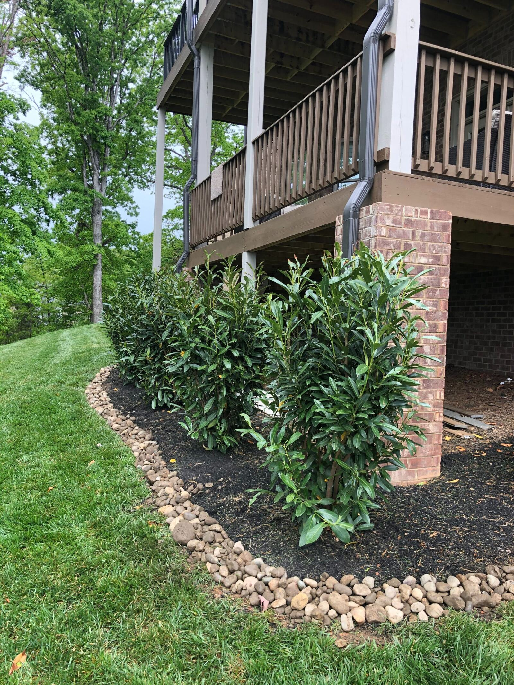

Many homeowners find it relaxing to work in the garden, whether that’s digging up the earth to put new life into the ground or pulling out a few noxious weeds. This work raises a property’s aesthetics and value. Still, it’s one thing to transfer a few tulips from grow pots into an outdoor dirt bank and quite another to transform your backyard altogether!
That’s where professional landscaping comes in. Read on as The Yard Force, a full-service company in Knoxville, Tennessee, relays why big jobs demand top-notch experts.
Save Time and Money – Call on Someone With More Landscaping Knowledge
How often have you bought a plant without considering its care requirements, only to have it die on your watch? You probably wondered what happened or even repurchased it, thinking you could do better. Unfortunately, keeping foliage alive often isn’t as simple as “water, fertilize, repeat.”
Plants have different care requirements. Some need filtered light from a shaded area to avoid burning (like ferns, bleeding hearts, and begonias). Other plants need a certain number of direct sunlight hours to thrive (like sunflowers, marigolds, and hydrangeas).
Do you know which foliage likes to dry out between waterings, which needs constant moisture, and which needs fertilization at different times of the year? A professional landscaping team with years of experience has these plantcare requirements down to a T. Knowing where and how each plant will grow best not only saves you money since you won’t have to keep repurchasing plants by trial and error, but it also saves a lot of time!
With professional landscapers, you won’t have to:
- Keep running to your nearest garden center for plants and supplies
- Waste time on developing and planting when you have better things to do
- Set aside time regularly to maintain the yard’s various features and greenery
You also won’t have to choose between doing extensive research or constantly remedying gardening mistakes if you have a yard professional on hand.
Other Benefits of a Professionally Landscaped Yard
While saving time and money are crucial, they’re far from the only reasons to hire a professional. Gardening implies planting and maintaining a few plants and flowers, but the concept of landscaping involves cultivating an entire area, from designing an outdoor living space to altering the existing terrain and elevation. It also extends to planting larger greenery like trees and installing irrigation systems.
Here are a few more advantages of hiring a professional to do these landscaping tasks.
Increase Curb Appeal the Right Way
Even if you find the right plants for different backyard spots, keeping plants alive isn’t enough to raise curb appeal on its own. Different plant installations can likely thrive in that area, but which one best accompanies surrounding plants or structures?
Landscapers might pair similar colors for a monochromatic scheme that complements a minimalistic garden design or mix and match colors, textures, and shapes for vibrancy. The landscaping style should reflect your home down to the very last hardscape installation. Patios, fences, and walkways also need the right spots so that they don’t look out of place.
Properly Prepare Before Planting
Once a professional landscaper creates your garden design and chooses the appropriate foliage, they’ll prepare the yard for laydown. The experts clear the area by removing debris like rocks and stones and trimming excessive foliage so that they can have a clean canvas. They’ll also pull up the plants you don’t intend to keep, making room for new additions.
From there, the team will test the soil to determine if it has enough nutrients to support deep, healthy roots. If it doesn’t, they’ll add organic matter or ingredients to improve air circulation, drainage, and pH levels. Since landscaping companies have the appropriate testing kits and tools for soil preparation, they set your plants on the right track for a long and healthy life – something that’s difficult to achieve on your own.
Lock In Long-Term Maintenance for Lasting Results
Once you finally have your yard looking how you want it, the last thing you need is a rapid decline, undoing all the hard work you’ve put into your garden. Are you ready to set aside regular hours for back-breaking lawn maintenance, such as mowing the grass and weeding the flowerbeds? You could skip it.
Why not opt out of physical exertion and time-consuming tasks by hiring experts with the equipment and know-how for trimming, pruning, and disease control? Weekly visits from the professionals are all it takes to keep your yard looking fantastic!
We’re the Kind of Force Your Yard Needs!
Forces of nature affect your yard. Luckily, The Yard Force has everything it needs to thrive, whether that’s after an intense Knoxville storm or a plant pest infestation. If you want to learn more about landscaping services in Knoxville, Tennessee, call (865) 290-8815 for a quote and a 100% customer satisfaction guarantee!